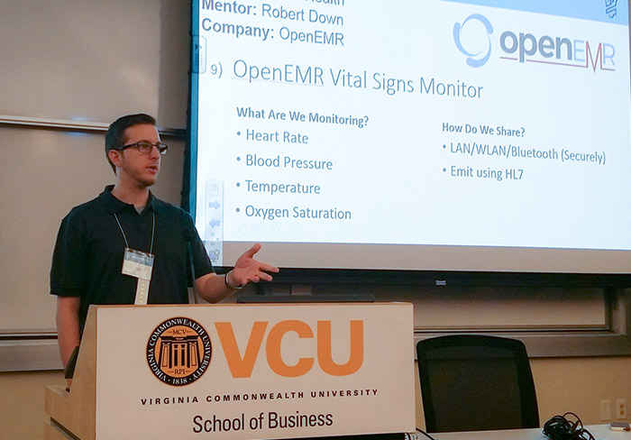
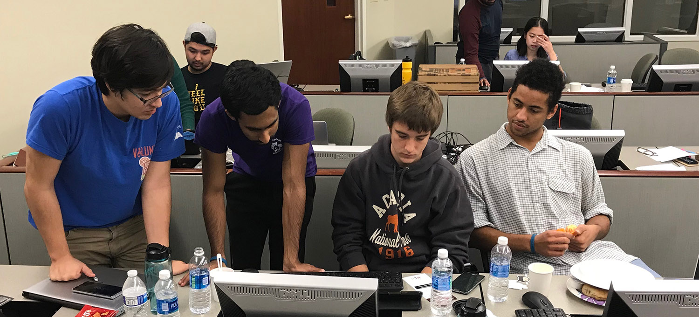
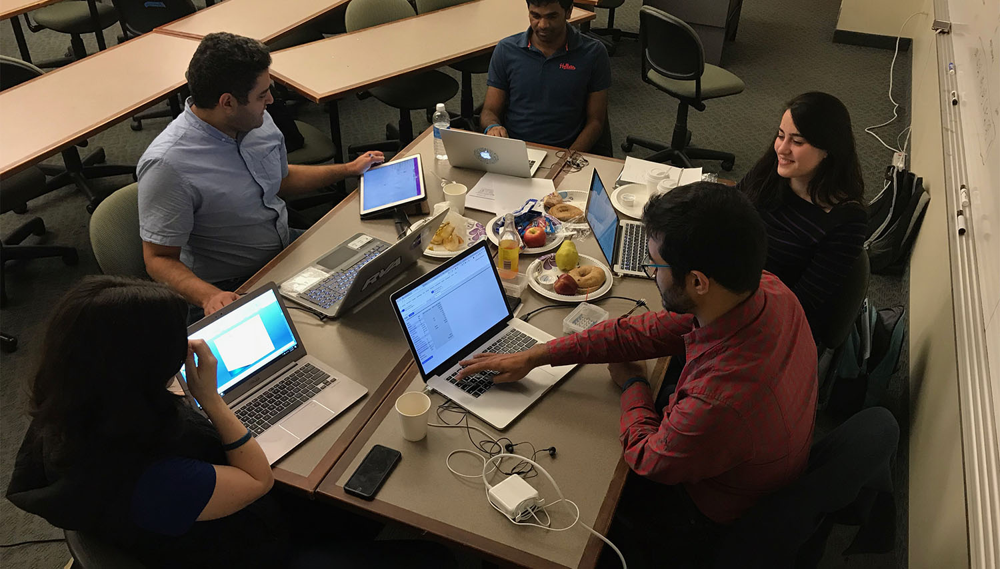
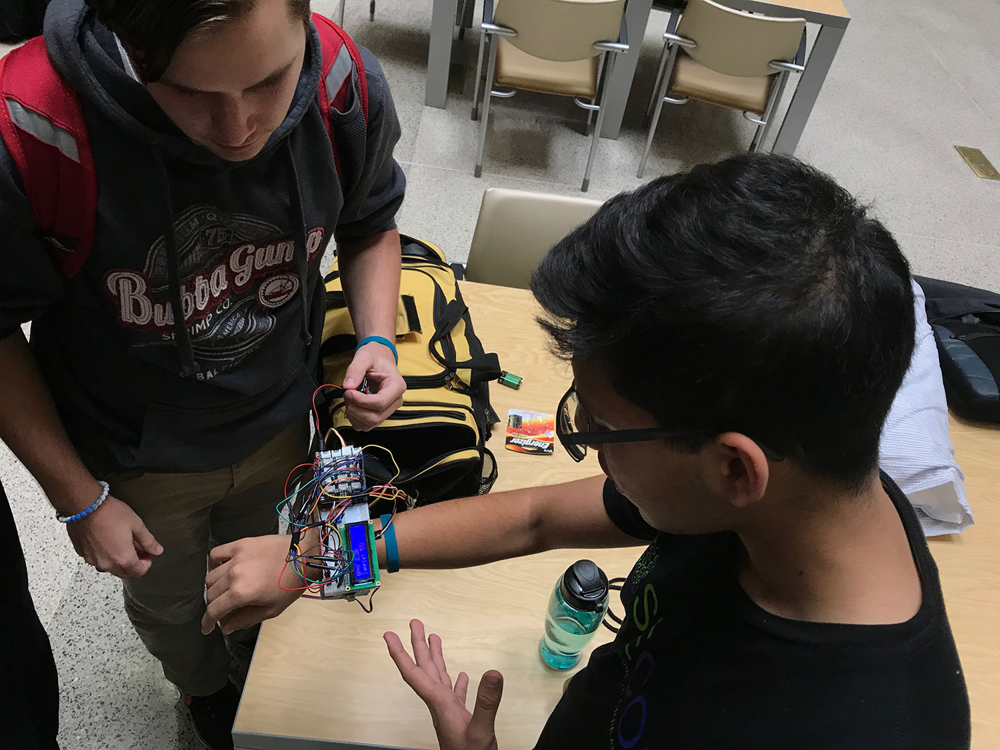

Virginia Commonwealth University’s School of Engineering held their second annual HealthHacks event November 3rd and 4th; OpenEMR was not only a sponsor of the event, but also sent me as a representative offering mentorship to the nearly 130 students participating in the event.
When we were approached by VCU to possibly sponsor the event, I immediately recognized the implications this type of event may have for low-resource areas and developing countries. Over the last few months, various parts of the OpenEMR community have been working on items from hardware integration to data analytics to academia; the HealthHacks event was the stepping stone to begin connecting all of these ideas into well-rounded solutions.

This year’s themes were Global Health and Pediatrics. OpenEMR presented two challenges to students whose backgrounds include computer science, biology, electrical engineering, and medicine. Our first challenge was to create an open-source, low-cost biometric device capable of capturing vital signs (heart rate, oxygen saturation, blood pressure, and temperature). Currently, clinicians take vital signs manually, which opens up the opportunity for errors to occur when transferring information from written notes to the EMR. We wanted a device capable of capturing this data automatically and sending the results to OpenEMR, reducing a potential opportunity for data loss or error. This workflow is typical in the United States and other developed countries, but in developing nations this workflow offers an place for improvement Our second challenge was to create a device capable of capturing and monitoring continuous biometric data such as an EKG (the electrical rhythm of the heart).
Again, we wanted to see this data pushed to a central server for the hospital to be able to monitor and analyze the data.

Throughout the event I was continually in awe of the way these students approached various problems. I was able to see groups build rapid prototype solutions aimed at helping children with Autism Spectrum Disorder by using virtual reality to better acclimate to new environments, build mobile apps that help children with Type 1 Diabetes, and use predictive modeling to better assess the risk of sepsis in our pediatric population.
Of all the great things I saw at the event, I think my favorite was seeing people from different fields of expertise come together to build something. Teams were competing for prizes, but that didn’t stop collaboration between groups. This is what makes the open-source community vibrant and strong. This is why I love giving countless hours of my time to the open-source community at large, and specifically OpenEMR.

So did these students meet our challenges? Yes! Several groups took on our challenges either directly or used it as a base. One group successfully captured data from an EEG device and provided real-time graph data for Alpha, Beta, and Delta waves. A second group generated a large sample data group, and used data analytics and machine learning to attempt to predict early sepsis infections in pediatric patients. This data is then aggregated and pushed into OpenEMR in a rolling basis. Additionally, they are able to capture biometric data via sensors. Given the 24-hour nature of the event, they tackled two problems: first, figure out how to capture and emit vital sign information; and second, generate some 15,000 rows of sample data (which would otherwise be generated from the previously mentioned biometric hardware) and run their analysis, pushing the results into OpenEMR.

A third group began the work of taking biometric-equipped smartphones and emitting the data from specific health APIs into a server running on a DragonBoard and inserting the data into OpenEMR. This group was able to have a working copy of OpenEMR on the DragonBoard next to the receiving server. A fourth group used 3D printing to create a wristband capable of capturing pulse, temperature, blood pressure, and oxygen saturation. This data can be emitted to OpenEMR or other analytic servers. The device also contains an LED display for healthcare providers to see the data in real time, before it makes it to OpenEMR. A fifth group created a similar device, capturing all four vital sign data points and proceeded to push that data to a Firebase server, where analysis would be run to determine if any data points were outside the normal limits. If the data was considered abnormal, a push notification would be sent to the physician for rapid-review.
All-in-all I could not be happier with my time at HealthHacks. I met great people passionate about open-source and improving patient outcomes worldwide. As the event wrapped up Sunday afternoon I reminded all the teams I interacted with that this was not the end, but instead just the beginning of a great adventure. Over the next few months I fully expect to see these devices continue to be refined and further enhanced for production use.